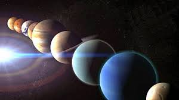

<!DOCTYPE html>
<html>

<head>
<title>Sistema Solar</title>
<meta charset = 'utf-8'>

</head>
<link rel= 'stylesheet' type='text/css' href='../css/estilos.css'>
</html>

<h1><body style = 'text-align:center;'><script>

/*
RAINBOW TEXT Script by Matt Hedgecoe (c) 2002
Featured on JavaScript Kit
For this script, visit http://www.javascriptkit.com
*/

// ********** cambia aquí

var text="La astrología y la astronomía" // tu texto
var speed=80 // velocidad de movimiento 


if (document.all||document.getElementById){
document.write('<span id="highlight">' + text + '</span>')
var storetext=document.getElementById? document.getElementById("highlight") : document.all.highlight
}
else
document.write(text)
var hex=new Array("00","14","28","3C","50","64","78","8C","A0","B4","C8","DC","F0")
var r=1
var g=1
var b=1
var seq=1
function changetext(){
rainbow="#"+hex[r]+hex[g]+hex[b]
storetext.style.color=rainbow
}
function change(){
if (seq==6){
b--
if (b==0)
seq=1
}
if (seq==5){
r++
if (r==12)
seq=6
}
if (seq==4){
g--
if (g==0)
seq=5
}
if (seq==3){
b++
if (b==12)
seq=4
}
if (seq==2){
r--
if (r==0)
seq=3
}
if (seq==1){
g++
if (g==12)
seq=2
}
changetext()
}
function starteffect(){
if (document.all||document.getElementById)
flash=setInterval("change()",speed)
}
starteffect()
</script></body></h1>

<body>
<h3></h3>
<h5></h5>

<h3>Diferencia entre la astrología y la astronomía</h3>
<h5 align="left">Mucha gente confunde la astronomía y la astrología, al principio significaban lo mismo , pero fueron cogien do caminos diferentes. De hecho, la diferencia es tan grande que si a un astrónomo lo llamas astrólogo por error, lo más probable es que se ofenda. Y con razón.</h5>
<h4>Astronomía</h4>
<div align="center"></div>
<h5 align="left">según la RAE: Ciencia que trata de los astros, de su movimiento y de las leyes que lo rigen.</h5>
<h5 align="left">La astronomía estudia el universo a través del análisis de las posiciones, movimientos, estructuras y evolución de los astros.</h5>
<h5 align="left">la astronomía tiene 2 ramas principales:</h5>
<h5 align="left"> La atronomía clásica que estudia las posiciones y los movimientos de los astros.</h5>
<h5 align="left">Y la astrofísica que se utiliza actualmente, y consiste en estudiar las propiedades de los astros así como su origen y evolución, utilizando los métodos y las leyes de la física.</h5>
<h4>Astrología</h4>
<h5 align="left">La RAE dice: Estudio de la posición y del movimiento de los astros como medio para predecir hechos futuros y conocer el carácter de las personas.</h5>
<h5 align="left">es una disciplina que intenta predecir los acontecimientos de la vida humana y su posición en el cielo</h5>
<div align="center"></div>

<h3>El horóscopo</h3>

<h4>Origen</h4>
<h5 align="left">Ya los  babilónicos, sumerios, indios y mayas habían descrito constelaciones uniendo puntos brillantes en el cielo según su imaginación.</h5>
<h5 align="left">El primer registro con signos zodiacos apareció en una tablilla mesopotámica el en siglo VIII a.C., perteneciente a la llamada serie Mul Apin, que determinaba las constelaciones del camino de la Luna, y 17 grupos de cuerpos celestes, los cuales serían precursores de los signos del zodíaco.</h5>
<h5 align="left">"La palabra zodiaco proviene de la palabra griega “zoon”, que significa animal y “kyklos”, que significa rueda. Se trata de una banda celeste de 18 grados de ancho que se desplaza por la eclíptica que es la línea curva por donde transcurre la tierra alrededor del sol, o por lo menos como se puede observar desde la tierra."</h5>
<div align="center"></div>
<h4>definición</h4>
<h5 align="left"> El horóscopo y la carta natal, son métodos de predicción, se basa en la posición de los astros en el momento de nacimiento.
Los horóscopos se basan en la posición de los planetas y las estrellas.
Tu personalidad y tus sentimientos pueden variar por signo lunar, solar, ascendente, etc.</h5 align="left">
<h4>Todos los símbolos y un poco de información</h4>
<h5 align="left">Aries: El carnero. Su siclo empieza del 21 de marzo a 20 de abril. Es un elemento fuego, su planeta regente es Marte, es impulsivo, su polo es positivo, emisor y penetrante.</h5><h5 align="left">
Tauro: El toro. Su siclo comienza el 20 de abril al 20 de mayo. Su elemento es tierra. Su planeta regente es Venus.</h5><h5 align="left">
Géminis: Los gemelos. Su Siclo es del 21 de Mayo al 21 de julio. Es elemento aire. Su planeta regente es Mercurio, positivo-neutro.</h5><h5 align="left">
Cáncer: El cangrejo. Empieza del 21 de Mayo al 21 de Junio. Esta cangrejo es signo agua. El “planeta” regente es la luna, es muy hogareño y estable.</h5><h5 align="left">
Leo: El  poderoso león. Su siclo es del 24 de Julio al 23 de Agosto. Es elemento fuego. Este signo irradia ya que su planeta regente es el sol. Es positivo, un líder y muy estable.</h5><h5 align="left">
Virgo: La virgen. Empieza del 23 de Agosto al 22 de Septiembre. Es elemento tierra. Su planeta regente es Mercurio.</h5><h5 align="left">
Libra: La balanza. Empieza el 23 de Septiembre al 23 de Octubre. Es elemento aire. Su planeta regente es Venus.</h5><h5 align="left">
 Escorpio: El escorpión. Empieza el 24 de Octubre al 21 de Noviembre. Es elemento agua.  Sus planetas regentes son Marte y Plutón.</h5><h5 align="left">
Sagitario: El centauro. Empieza el 22 de Noviembre al 20 de Diciembre. Es elemento fuego. Su planeta regente es Júpiter.</h5><h5 align="left">
Capricornio: La cabra. Empieza el 21 de Diciembre al 20 de Enero. Es elemento tierra. Su planeta regente es Saturno.</h5><h5 align="left">
Acuario: El aguador. Del 21 de Enero al 19 de Febrero. Es elemento aire. Sus planetas regentes son Saturno y Urano.</h5><h5 align="left">
Piscis: Los peces. Empieza el 20 de febrero al 20 de marzo. Es elemento agua. Sus planetas regentes son Júpiter y Neptuno.</h5>

<h4>Aquí tienes el pronóstico de tu día dependiendo de tu nacimiento</h4>
<p align="center">    <font color="#0C0505"><b><font class="navtext"><font face="Verdana" style="font-size:
9pt;color:white;">HOROSCOPO</font><font style ='color:white;' class="content" size="1"><br /></font></font> <font class="navtext"><font style ='color:white;'face=    "Verdana"
size="1">Descubre Tu Destino Para</font><font class="navtext"><br /></font> <font face="Verdana" size="1"><font style ='color:white;'  class="navtext">El Dia
de    Hoy</font><br /></font></font></b></font><b><font class="navtext" color="#0C0505"><font face="Verdana"
color="#0C0505" size="1"><br /></font> <select style=    "border-style:solid; border-width:1px; VISIBILITY: visible; font-family:Verdana; font-size:8pt;
color:#0c0505; font-weight:bold; padding-left:5px; padding-right:6px; padding-top:1px; padding-bottom:1px; background-color:#ffffff"    onchange=
"if(this.options[1].selected)
window.open('http://www.horoscopofree.com/misc/partnership/iframe/aries_st.html','hrscp','width=460,height=100,top=150,left=175,scrolling=0,frameborder=0,status=0,menubar=0,scrollbars=0');
else if(this.options[2].selected)
window.open('http://www.horoscopofree.com/misc/partnership/iframe/taurus_st.html','hrscp','width=460,height=100,top=150,left=175,scrolling=0,frameborder=0,status=0,menubar=0,scrollbars=0');
else if(this.options[3].selected)
window.open('http://www.horoscopofree.com/misc/partnership/iframe/gemini_st.html','hrscp','width=460,height=100,top=150,left=175,scrolling=0,frameborder=0,status=0,menubar=0,scrollbars=0');
else if(this.options[4].selected)
window.open('http://www.horoscopofree.com/misc/partnership/iframe/cancer_st.html','hrscp','width=460,height=100,top=150,left=175,scrolling=0,frameborder=0,status=0,menubar=0,scrollbars=0');
else if(this.options[5].selected)
window.open('http://www.horoscopofree.com/misc/partnership/iframe/leo_st.html','hrscp','width=460,height=100,top=150,left=175,scrolling=0,frameborder=0,status=0,menubar=0,scrollbars=0');
else if(this.options[6].selected)
window.open('http://www.horoscopofree.com/misc/partnership/iframe/virgo_st.html','hrscp','width=460,height=100,top=150,left=175,scrolling=0,frameborder=0,status=0,menubar=0,scrollbars=0');
else if(this.options[7].selected)
window.open('http://www.horoscopofree.com/misc/partnership/iframe/libra_st.html','hrscp','width=460,height=100,top=150,left=175,scrolling=0,frameborder=0,status=0,menubar=0,scrollbars=0');
else if(this.options[8].selected)
window.open('http://www.horoscopofree.com/misc/partnership/iframe/scorpio_st.html','hrscp','width=460,height=100,top=150,left=175,scrolling=0,frameborder=0,status=0,menubar=0,scrollbars=0');
else if(this.options[9].selected)
window.open('http://www.horoscopofree.com/misc/partnership/iframe/sagittarius_st.html','hrscp','width=460,height=100,top=150,left=175,scrolling=0,frameborder=0,status=0,menubar=0,scrollbars=0');
else if(this.options[10].selected)
window.open('http://www.horoscopofree.com/misc/partnership/iframe/capricorn_st.html','hrscp','width=460,height=100,top=150,left=175,scrolling=0,frameborder=0,status=0,menubar=0,scrollbars=0');
else if(this.options[11].selected)
window.open('http://www.horoscopofree.com/misc/partnership/iframe/aquarius_st.html','hrscp','width=460,height=100,top=150,left=175,scrolling=0,frameborder=0,status=0,menubar=0,scrollbars=0');
else if(this.options[12].selected)
window.open('http://www.horoscopofree.com/misc/partnership/iframe/pisces_st.html','hrscp','width=460,height=100,top=150,left=175,scrolling=0,frameborder=0,status=0,menubar=0,scrollbars=0');"
name="SucreVip" size="1">        <option selected="selected">            Elige tu signo  
   </option>        <option>            Aries        </option>
     <option>            Tauro        </option>    
<option>            Geminis        </option>        <option>
         Cancer        </option>        <option>        
Leo        </option>        <option>            Virgo    
</option>        <option>            Libra        </option>  
   <option>            Escorpio        </option>    
<option>            Sagitario        </option>        <option>
         Capricornio        </option>        <option>        
Acuario        </option>        <option>            Piscis    
</option>    </select></font></b></p>

<table>    <tr>        <td height="27" class="edit_rb_footer" id="edit_rb_footer_1">    
</td>    </tr></table>;


<tr>
<td><div align="center"><a href = 'planetas.html'></a><figcaption style = 'text-align:center;color:blue;'>Los planetas</figcaption></div></td>
</tr>
<tr>
<td><div align="center"><a href = 'historia.html'></a><figcaption style = 'text-align:center;color:blue;'>Historia</figcaption></div></td>
</tr>
<tr>
<td><div align="center"><a href = 'astrologia.html'></a><figcaption style = 'text-align:center;color:blue;'>Astrología y astronomía</figcaption></div></td>
</tr>
<tr>
<td><div align="center"><a href = 'curiosidades.html'></a><figcaption style = 'text-align:center;color:blue;'>Curiosidades</figcaption></div></td>
</tr>
<tr>
<td><div align="center"><a href = 'unpocodehumor.html'></a><figcaption style = 'text-align:center;color:blue;'>Un poco de humor</figcaption></div></td>
</tr>

<tr>
<td><div align="center"><a href = '.sol.html'></a><figcaption style = 'text-align:center;color:blue;'>Sol</figcaption></div></td>
</tr>
<tr>
<td><div align="center"><a href = 'energia.html'></a><figcaption style = 'text-align:center;color:blue;'>Energía solar</figcaption></div></td>
</tr>
<tr>
<td><div align="center"><a href = 'formacion.html'></a><figcaption style = 'text-align:center;color:blue;'>Formación del sistema solar</figcaption></div></td>
</tr>
<tr>
<td><div align="center"><a href ='nasa.html'></a><figcaption style = 'text-align:center;color:blue;'>Nasa</figcaption></div></td>
</body>
